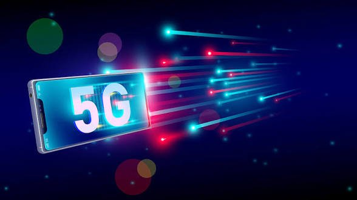
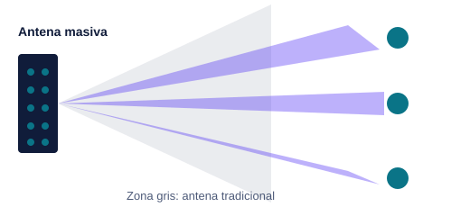
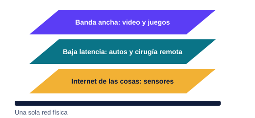
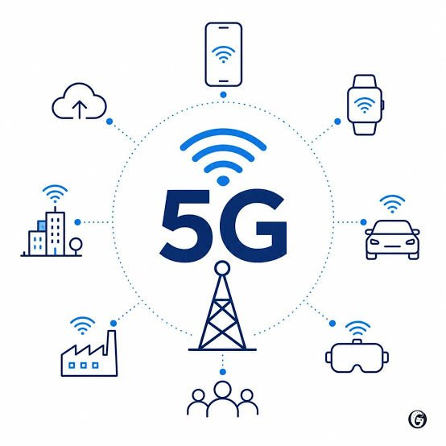

Explicado sin palabras difíciles
Aquí vas a ver cómo llega internet a tu celular. Puedes ir directo a: Las antenas | Los tipos de señal | La antena que apunta | Los carriles.
Tu celular se conecta a una antena que está cerca de ti. Cada antena cubre una zona que se llama celda. Cuando caminas o viajas en carro, tu celular pasa de una antena a otra sin que te des cuenta, y por eso no se corta la llamada.

La señal viaja como ondas, parecidas a las del agua. Las ondas largas llegan lejos pero llevan poca información. Las ondas cortas llevan mucha información, pero se cansan rápido y llegan poco.
| Tipo | Cómo es | Qué tan bueno es | |
|---|---|---|---|
| Alcance | Velocidad | ||
| Señal baja | Llega lejos y atraviesa paredes | Mucho | Normal |
| Señal media | El equilibrio; la más usada | Medio | Alta |
| Señal alta | Muy rápida, pero la bloquean paredes y lluvia fuerte | Poco | Muy alta |
| Las empresas usan las tres a la vez. | |||
Las antenas antiguas mandaban la señal para todos lados, como un foco que ilumina todo el cuarto. Las del 5G funcionan más como una linterna: apuntan la señal hacia cada persona. Así gastan menos energía y no se estorban entre sí.

Imagina una carretera con carriles distintos: uno para videos y juegos, otro para cosas urgentes como un hospital o un auto conectado, y otro para miles de sensores pequeños. Es la misma carretera, pero cada uso tiene su propio carril. Eso se llama network slicing.


© 2026 Redes 5G. Autor: Iman David Pacompia Reymundo